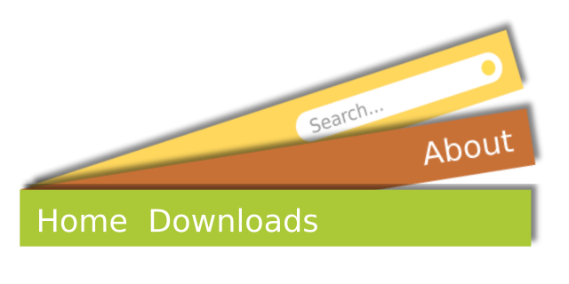

Nave.js is a simple to use navbar script.
a
Main features

•Customizable•
Using CSS you can customize your navbar (as expected). With nave.js, you can choose how active links will look like, when the page is scrolled to their section, by using the variable
naveStyle. You can change the navebar's height with
naveSize.
Each update adds new customization options.
•Sticky•
It sticks to the top of the page when the user scrolls down. This can be easilt achieved by using
position: sticky;
However, this only works on firefox, for now.
Nave.js provides a cross-browser sticky navbar, like the one you can see in this page.
•Dynamic•
Some websites contain only one page, like this one. With
Nave.js, the nav link to the section you are becomes active;
•Easy to use•
Just follow the simple steps below to start using
Nave.js.
a
Getting started
1st step:
Add the folowing to the bottom of your page's body:
<script type="text/javascript">https://di060.github.io/nave.js/nave.js</script>
2nd step:
Add a DIV element anywhere in your page, with the id "nave". put some A and SPAN elements inside.
3rd step:
Add a configuration script, like this one, before the 1st step's script:
<script type="text/javascript">
naveSize = 48; //Navbar's height
naveType = 'sticky'; //Navbar's configurations (details on the 'advanced' section)
naveLinks = ['downloads','about','help']; //Single page links (idem ↑)
naveActive = 'background-color: tomato;'; //CSS of the active navigation link
</script>
Then your navbar is almost ready. More details about the settings below.
a
Advanced
With the 4th step's configuration script, you can customize your navbar. You can also change the style with css.
naveSize Controls the navbar's height, in pixels. Must be a number (default: 48);
naveType Activates some of the navbar's functions. Must be either 'sp' (for single paged websites), 'sticky' (for a navbar that sticks to the top of the screen when scrolled past), or both (e.g. 'sp sticky') (default: 'sticky');
naveLinks A list of the links for single-page websites. The list may contain the anchors, in order. The first element of the list is the second link, as anything above it will activate the first. Must be an array, for example
['main_features', 'getting_started', 'advanced']. the page may contain the anchors "main_features", "getting_started" and "advanced", in his exact order;
naveActive Contains the CSS style of the active links, for single-paged websites. For example:
naveActive = "background-color: #8dafaf; color: black;";
*keep in mind that all variable names and values are case-sensective*
a
About
To-do list:
Responsive navbars, for smaller screens (e.g. smartphones);
Vertical navbars;
Side menus;
You don't need to download the file, but if you want to, click
here.
Don't forget to check this webpage for info about any update.
An update log will be avaliable after the first update.
Credits aren't necessary, but are apreciated.
GitHub repository
Page and silly script created by
Diogo "Piccirillo" Silva
Contact and troubleshooting:
diogo@piccirillo.pe.hu